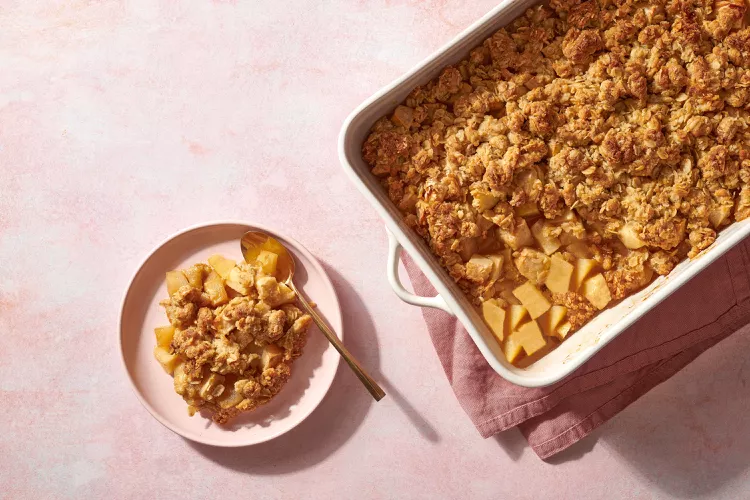

Apple Crisp

Description
Much easier to make than a pie, this baked dessert pairs apples and cinnamon with a crispy oat topping.
A crisp is much simpler to make than a pie; all you need to do is scatter the topping over the fruit in the baking dish. But there's a secret to making a much-better-than-average crunchy, chunky topping: working the oat mixture into large clumps with your hands. This helps the topping hold together atop the apples while baking to a golden brown.
Find the original recipe
Ingredients
- ¾ cup all-purpose flour, (spooned and leveled)
- ¼ cup packed light-brown sugar
- ½ teaspoon salt
- ½ cup plus 2 tablespoons granulated sugar/li>
- 8 tablespoons (1 stick) unsalted butter, cold, cut into small cubes
- 1 cup old-fashioned rolled oats (not quick-cooking)
- 3 pounds apples, such as Empire, Gala, or Braeburn, peeled, cored, and cut into ½-inch chunks
- 2 tablespoons fresh lemon juice
- ½ teaspoon ground cinnamon
Steps
- Preheat oven to 375 degrees. In a large bowl, mix together flour, brown sugar, salt, and 2 tablespoons granulated sugar. Cut butter into flour, using a pastry blender or two knives, until mixture is the texture of coarse meal.
- Add oats, and use your hands to toss and squeeze mixture until large, moist clumps form. Transfer to freezer to chill while you prepare apples.
- In another large bowl, toss apples with lemon juice, cinnamon, and remaining 1/2 cup granulated sugar.
- Transfer to a shallow 2-quart baking dish, and sprinkle with topping mixture. Place baking dish on a rimmed baking sheet, and bake until golden and bubbling, 55 to 65 minutes.
- Let cool 10 minutes before serving. Crisp is best served warm.